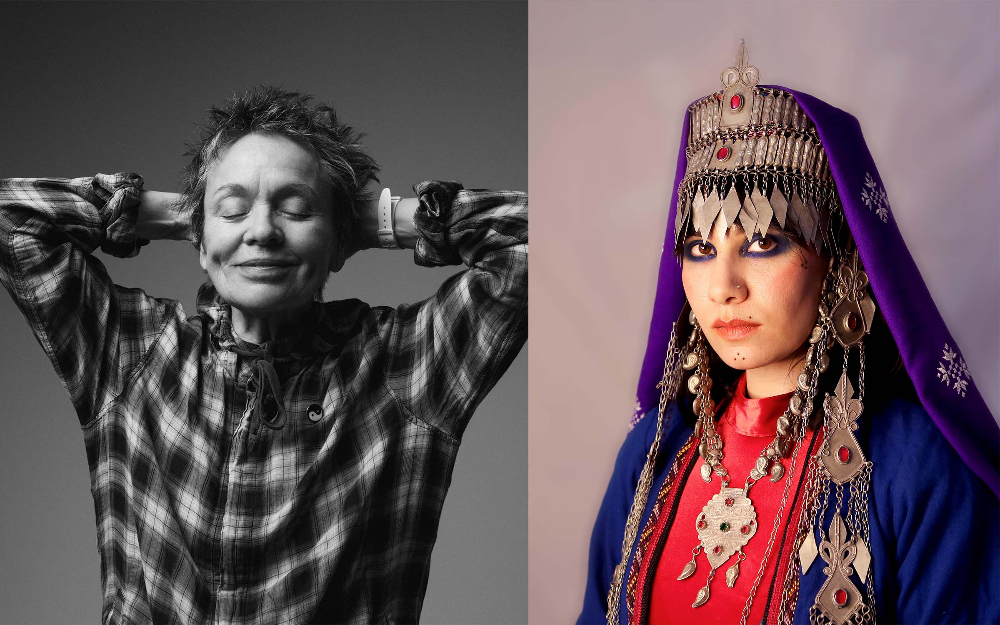
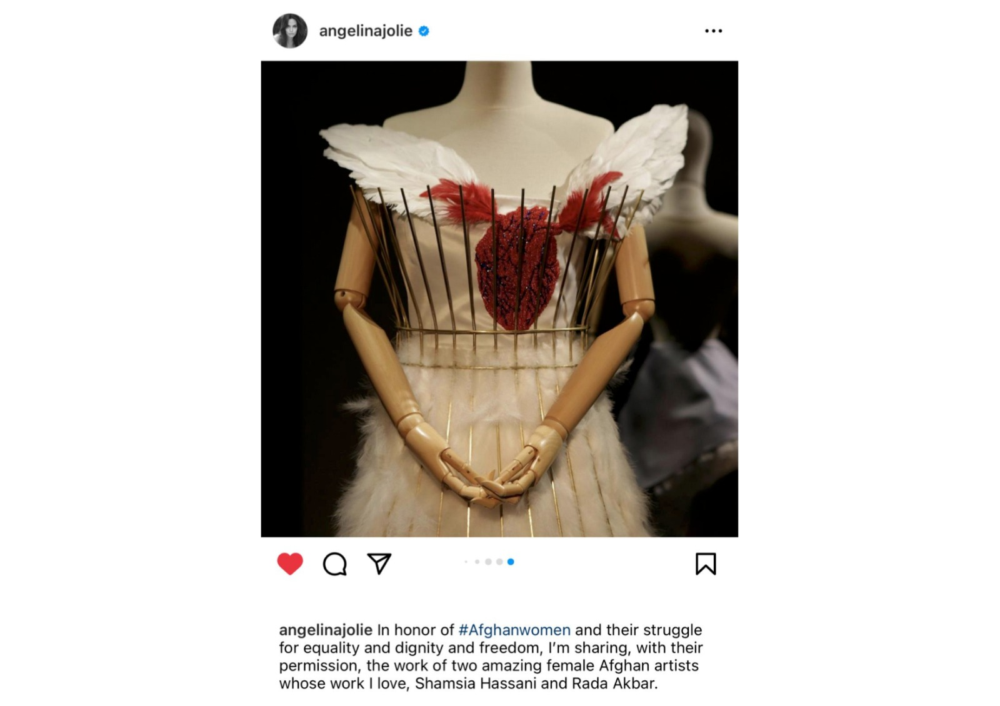

Latest News
Artist´s View - An Interview with Rada Akbar at Musée Guimet 18. January. 2023

Superwomen: Artist Talk With Rada Akbar and Laurie Anderson 08. March. 2022
Laurie Anderson will be joined by Afghan conceptual artist Rada Akbar on International Women’s Day to discuss their upcoming collaboration, “A Fashion Show for Spirits,” in addition to exploring issues of women and power, perception and photography in Akbar’s ongoing project Abarzanan, which translates to “Superwomen” in Dari Persian, and Anderson’s Fully Automated Nikon (1973), currently on view in Laurie Anderson: The Weather at the Hirshhorn.
Angelina Jolie Shares an Emotional Letter from a Young Afghan Woman 08. February. 2022
"Please track what is happening in Afghanistan, where young women are being taken from their homes at night at gunpoint and disappeared, and new restrictions are being imposed on the freedom of women and girls day by day," she wrote, concluding the post, "Please help ensure they're not forgotten." Today, she featured artwork from two Afghan women artists on her Instagram. "In honor of#Afghanwomen and their struggle for equality and dignity and freedom, I'm sharing, with their permission, the work of two amazing female Afghan artists whose work I love, Shamsia Hassani and Rada Akbar," she wrote.
From Victims to Superwomen: Honoring Female Strength in Afghanistan 19. March. 2020

A powerful art exhibit in Kabul called Abarzanan - Superwomen is honoring eight trailblazing women in Afghanistan and the region, including Rukhshana, a young woman who was stoned to death in 2015 for fleeing an arranged marriage. The exhibit was created by artist and photographer Rada Akbar and explores the patriarchal society's refusal to acknowledge the achievements of courageous women. With the possibility of a Taliban return to power looming after a U.S.-Taliban agreement, the Superwomen exhibit takes on added urgency.